nand2tetris_p1
refer to this for nand implementations of basic gates: 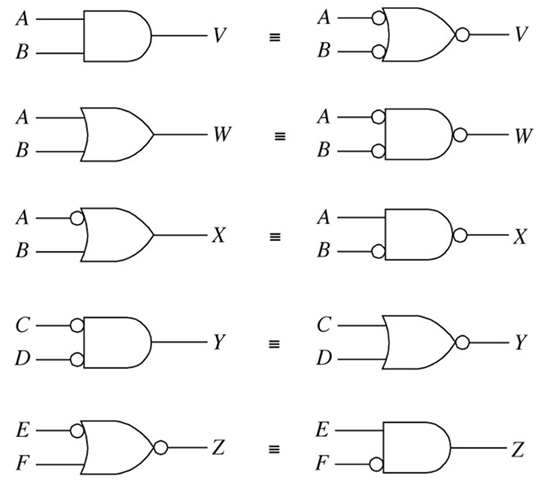
1. Not
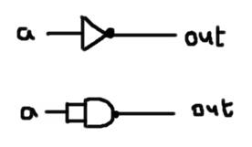
/**
* Not gate:
* out = not in
*/
CHIP Not {
IN in;
OUT out;
PARTS:
// Put your code here:
Nand(a=in, b=in, out=out);
}
2. And
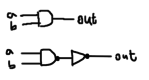
/**
* And gate:
* out = 1 if (a == 1 and b == 1)
* 0 otherwise
*/
CHIP And {
IN a, b;
OUT out;
PARTS:
Nand(a=a, b=b, out=aAndb);
Not(in=aAndb, out=out);
}
3. Or
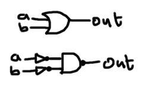
/**
* Or gate:
* out = 1 if (a == 1 or b == 1)
* 0 otherwise
*/
CHIP Or {
IN a, b;
OUT out;
PARTS:
Not(in=a, out=Nota);
Not(in=b, out=Notb);
Nand(a=Nota, b=Notb, out=out);
}
4. Xor
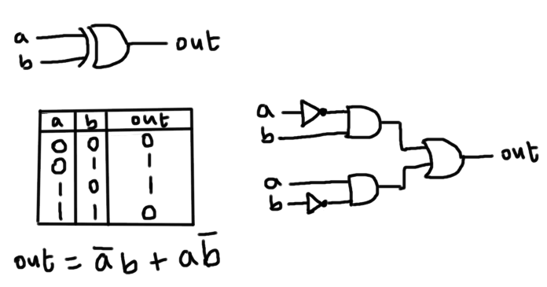
/**
* Exclusive-or gate:
* out = not (a == b)
*/
CHIP Xor {
IN a, b;
OUT out;
PARTS:
Not(in=a, out=Nota);
Not(in=b, out=Notb);
And(a=Nota, b=b, out=NotaAndb);
And(a=a, b=Notb, out=aAndNotb);
Or(a=NotaAndb, b=aAndNotb, out=out);
}
5. Mux
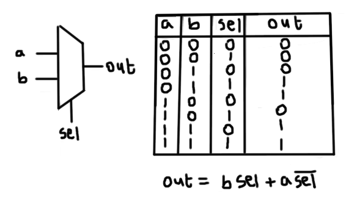
/**
* Multiplexor:
* out = a if sel == 0
* b otherwise
*/
CHIP Mux {
IN a, b, sel;
OUT out;
PARTS:
Not(in=sel, out=Notsel);
And(a=b, b=sel, out=bAndsel);
And(a=a, b=Notsel, out=aAndNotsel);
Or(a=bAndsel, b=aAndNotsel, out=out);
}
6. DMux:
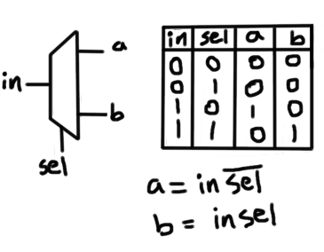
/**
* Demultiplexor:
* {a, b} = {in, 0} if sel == 0
* {0, in} if sel == 1
*/
CHIP DMux {
IN in, sel;
OUT a, b;
PARTS:
Not(in=sel, out=Notsel);
And(a=in, b=Notsel, out=a);
And(a=in, b=sel, out=b);
}
Multi-bit variants:
7. Not16
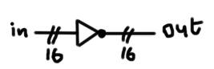
/**
* 16-bit Not:
* for i=0..15: out[i] = not in[i]
*/
CHIP Not16 {
IN in[16];
OUT out[16];
PARTS:
Not(in=in[0], out=out[0]);
Not(in=in[1], out=out[1]);
Not(in=in[2], out=out[2]);
Not(in=in[3], out=out[3]);
Not(in=in[4], out=out[4]);
Not(in=in[5], out=out[5]);
Not(in=in[6], out=out[6]);
Not(in=in[7], out=out[7]);
Not(in=in[8], out=out[8]);
Not(in=in[9], out=out[9]);
Not(in=in[10], out=out[10]);
Not(in=in[11], out=out[11]);
Not(in=in[12], out=out[12]);
Not(in=in[13], out=out[13]);
Not(in=in[14], out=out[14]);
Not(in=in[15], out=out[15]);
}
we will do the same for And16, Or16 and Mux16!
multi-way variants:
8.Or8Way
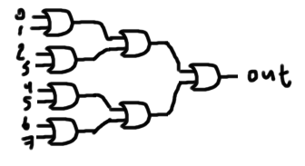
/**
* 8-way Or:
* out = (in[0] or in[1] or ... or in[7])
*/
CHIP Or8Way {
IN in[8];
OUT out;
PARTS:
Or(a=in[0], b=in[1], out=out0);
Or(a=in[2], b=in[3], out=out1);
Or(a=in[4], b=in[5], out=out2);
Or(a=in[6], b=in[7], out=out3);
Or(a=out0, b=out1, out=out0Orout1);
Or(a=out2, b=out3, out=out2Orout3);
Or(a=out0Orout1, b=out2Orout3, out=out);
}
9. Mux4Way16
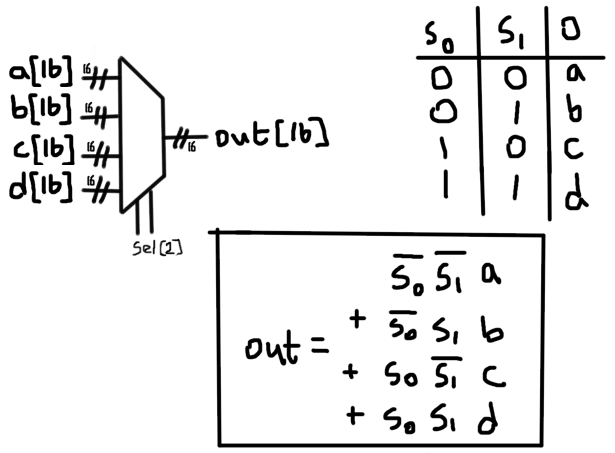 we can use two 2x1 Mux16 to get a 4x1 Mux16 aka Mux4Way16: 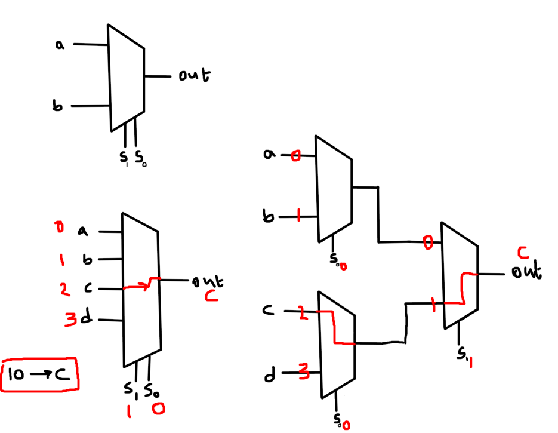
CHIP Mux4Way16 {
IN a[16], b[16], c[16], d[16], sel[2];
OUT out[16];
PARTS:
Mux16(a=a, b=b, sel=sel[0], out=out1);
Mux16(a=c, b=d, sel=sel[0], out=out2);
Mux16(a=out1, b=out2, sel=sel[1], out=out);
}
10. Mux8way16
chain them as in the Mux4Way16
CHIP Mux8Way16 {
IN a[16], b[16], c[16], d[16],
e[16], f[16], g[16], h[16],
sel[3];
OUT out[16];
PARTS:
Mux4Way16(a=a, b=b, c=c, d=d, sel=sel[0..1], out=out1);
Mux4Way16(a=e, b=f, c=g, d=h, sel=sel[0..1], out=out2);
Mux16(a=out1, b=out2, sel=sel[2], out=out);
}
11. DMux4Way
chain DMux's as follow: 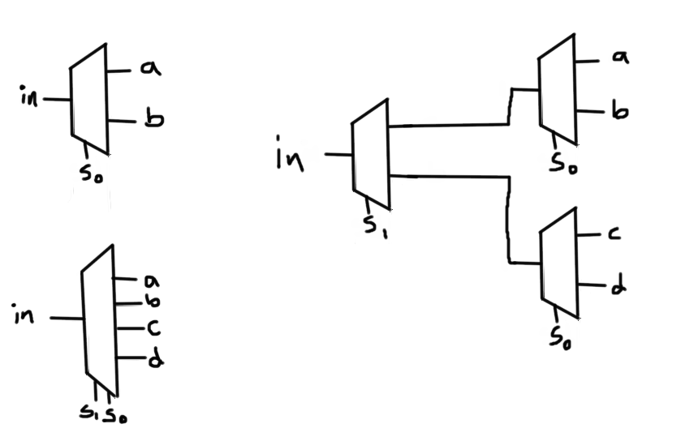